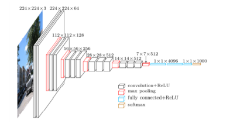
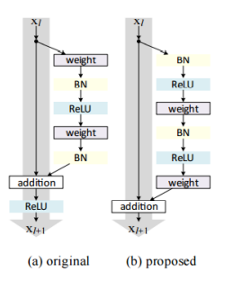
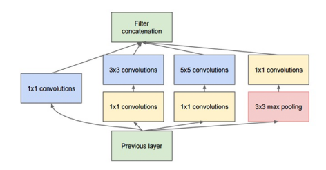

Convolutional Neural Networks
The five architectures of CNNs that have been pre-trained on the ImageNet dataset and, are present in the Keras library are mentioned below:
VGG16
VGG19
ResNet50
Inception V3
Xception
Parameterized Learning
The point of parameterized learning is to define a machine learning model that can learn patterns from our input data during training time, but have the testing process be must faster and to obtain a model that can be defined using a small number of parameters that can easily represent the network regardless of training size.
VGG16 & VGG19

Fig: A visualization of the VGG architecture.
The figure presents the visualization of the VGG architecture. Images with 224 x 224 x3 dimensions are inputted to the network. Convolutions filters of only 3 x 3 are then applied with more convolutions stacked on top of each other prior to max pooling operations deeper in the architecture.
The VGG network architecture was introduced by Simonyan and Zisserman in their 2014 paper, Very Deep Convolutional Networks for Large Scale Image Recognition. The VGG family of networks is characterized by using only 3 x 3 convolutional layers stacked on top of each other in increasing depth. The volume size is reduced by max pooling. Two fully-connected layers are then followed by a softmax classifier.
ResNet

Fig: Left: The original residual module. Right: The updated residual module using pre-activation.
The ResNet module was introduced by He et al. in their 2015 paper, Deep Residual Learning for Image Recognition. The ResNet architecture has become a seminal work in the deep learning literature, demonstrating that extremely deep networks can be trained using standard SGD through the use of residual modules. Accuracy can be obtained by updating the residual module to use identity mappings.
Inception V3

Fig: The original Inception module used in GoogLeNet.
The Inception module was introduced by Szegedy et al. in their 2014 paper, Going Deeper with Convolutions. The goal of the Inception module is to act as multi-level feature extractor by computing 1 x 1, 3 x 3, and 5 x 5 convolutions within the same module of the network. The output of these filters are then stacked along the channel dimension before being fed into the next layer in the network. The original incarnation of this architecture was called GoogLeNet.
Xception
Xception module was introduced by Francois Chollet in their 2016 paper, Xception: Deep Learning with Depthwise Separable Convolutions. Xception is an extension to the Inception architecture which replaces the standard Inception modules with depthwise separable convolutions.